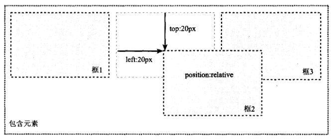
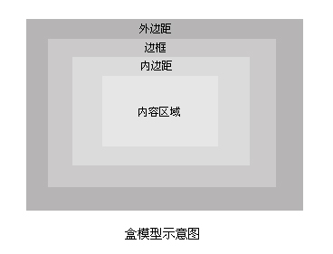
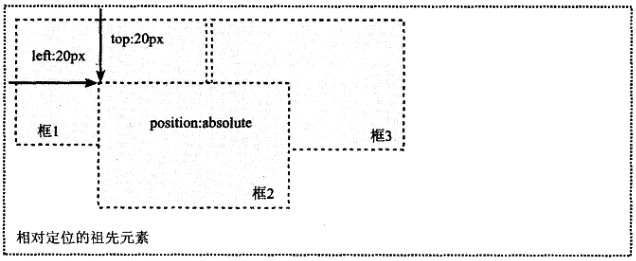
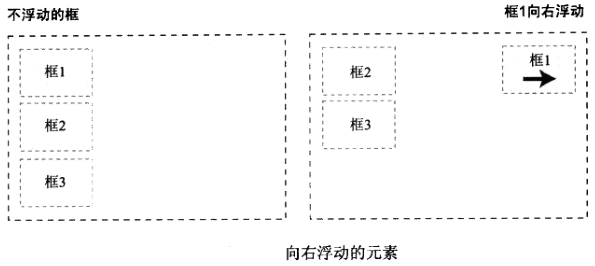
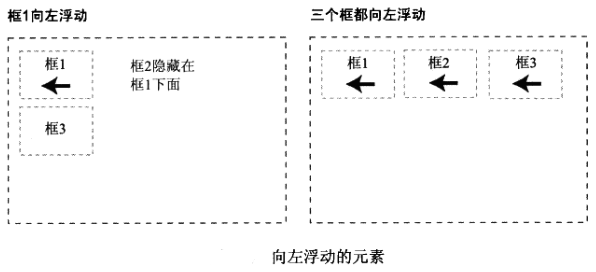
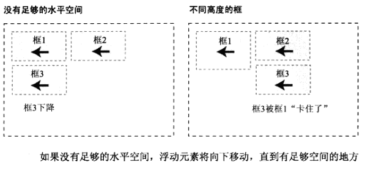
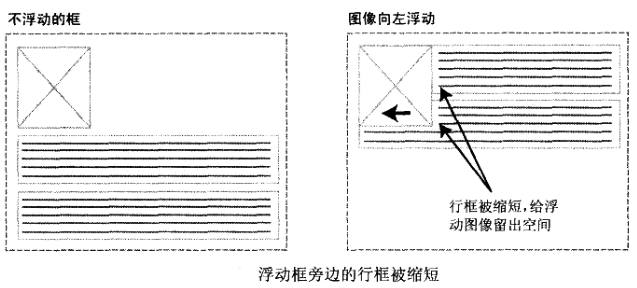
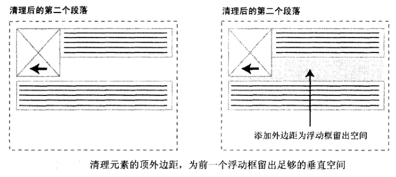
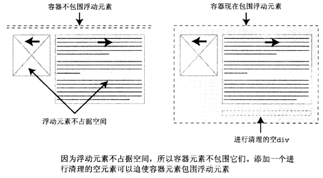

精通CSS笔记-盒模型&定位&浮动
KING
Jan 28, 2017
Jan 28, 2017 UPDATED
最重要的三个css概念：浮动，定位，盒模型。他们控制在页面上安排和显示元素的方式，形成基本的布局。
主要学习如下几点：
- 盒模型的复杂性和特点
- 如何以及为什么使用外边距叠加
- 绝对定位和相对定位之间的差异
- 浮动和清理是如何工作的
CSS盒模型

- 在元素上添加背景，背景会应用与内容和内边距组成的区域
- 内边距magin使内容周围由一个隔离带
- 添加边框border会在内边距的区域外加一条线
- 外边框padding是透明的，一半控制元素之间的间隔
- CSS 2.1的轮廓outline绘制在元素框上，不影响元素大小和定位
- 使用
*{margin:0;padding:0;}对option这样的元素不友好,应该用全局reset设置内外边距 - height和width是指内容区域的高和宽，内外边距和边框不会影响内容区域的尺寸，但会增加元素框的总尺寸
- 外边框可以为负值，内边框不能为负值
- 早期IE版本（6以下）有自己的盒模型，比标准的小
- 外边距会相互叠加，上面元素的底外边距会吞噬下面元素的顶外边距
- 空元素的外边距会自动叠加，且能发生多次叠加，即多个空段落只占一行的原因
- 只有普通文档流中块框的垂直外边距才会发生叠加。行内框、浮动框或绝对定位框之间不会叠加
- 使用display属性改变生成的框的类型，block可以让行内元素（strong，span，a）表现为块级元素，none使元素没有框，即不再显示，不占用文档空间
- 行内框在一行中水平排列，修改行内框尺寸的唯一方法是修改行高、水平边框、内外边距。而设置宽、高，垂直内外边距无效。
- display属性设置为inline-block可以让元素像行内元素一样水平的依次排列，但框的内容任符合块级框的行为，如能设置宽、高，垂直内外边距。
匿名块框：将一些文本添加到一个块级元素（如div）的开头时，这些文本会被当作块级元素对待：
1
2
3
4<div>
some text
<p>other text</p>
</div>匿名行框：块级元素内的文本行也会发生类似的情况，假设有一个包含3行文本的段落，则每行文本形成一个匿名行框
- 无法直接对匿名块或行框应用样式，除非使用
:first-line伪元素
定位
相对定位
- 若对一个元素进行相对定位，它将出现在它所在的位置上（未设置top或left等属性时），
- 然后，通过设置垂直或水平位置，可以让这个元素”相对与“它的起点移动，
- 若设置top:20, left：20，它将相对在原位置顶部向下移动20像素，同时右移20像素（即在左边创建20像素的空间）
注: 使用相对定位时，无论是否移动，元素仍占据原来的空间，因此，移动元素会导致它覆盖其他框
1
2
3
4
5
6
7
8
9
10
11
12
13
14
15
16
17
18
19
20
21<div style="padding: 5px; width: 200px; height: 50px;" class="test">
<div class="test"></div>
<div id="d1" class="test"></div>
<div class="test"></div>
</div>
<style>
div.test {
width: 20px;
height: 20px;
border: 1px solid #000;
margin: 5px;
display: inline-block;
}
#d1 {
border-color: red;
position: relative;
top: 10px;
left: 30px;
}
</style>EXAMPLE:
- 相对定位模型图：

- 绝对定位
- 相对定位实际上为普通流定位模型的一部分，而绝对定位使元素的位置与文档流无关，因此不占据空间。普通文档流中其他元素的布局就像绝对定位的元素不存在一样。
- 绝对定位的元素的位置是相对与距离它最近的那个已定位的祖先元素确定的，若没有已定位的祖先元素，则相对于初始包含块，可能是画布或html元素

- 固定定位
- 固定定位是绝对定位的一种，固定元素的包含块是视口，所以总是出现在窗口中相同位置的浮动元素
- 如屏幕右下角的”回到页顶“的按钮就采用固定定位
浮动
浮动的框可以左右移动，直到它的外边缘碰到包含框或另外一个浮动框的边缘。浮动框不在文档的普通流中。


若包含块太窄，无法容纳水平排列的3个浮动元素，那么其他浮动块向下移动，直到有足够空间的地方。
若浮动元素的高度不同，那么当他们向下移动时可能会被其他浮动元素”卡住“。

行框和清理
若浮动的元素后面有一个文档流中的元素，那么这个元素的框会表现得像浮动根本不存在一样。当时，框的文本内容会受到浮动元素的影响，会移动以留出空间。
即：浮动元素旁边的行框被缩短，从而给浮动元素留出空间，因此行框围绕浮动框。（创建浮动框使文本可以为围绕图像）

- 要想阻止行框围绕在浮动框的外边，需要对包含这些行框的元素应用clear属性（值可以是left，right，both或none），对元素进行清理实际上为前面的浮动元素留出了垂直空间。
clear让周围的元素为浮动元素留出空间。

 - overflow属性值为hidden或auto的时候，会自动清理包含的任何浮动元素，这种方法不用添加无意义的标签，
但并不适用所有情况，因为设置overflow属性会在某些情况下产生滚动条或截断内容。 使用动态添加清理元素的方式，css配合javascrip，常常需要添加clear的类名
1
2
3
4<div class="news clear">
<img src="xx" alt="xx">
<p></p>
</div>仅使用css的方法，结合伪类
:after和内容声明，在指定的现有内容的末尾添加新的内容。
如下实例中，添加一个点（比较小）
将height设置为0，visibility设置为hidden可使新内容不占据垂直空间且不在页面上显示
因为被清理元素在它们的顶外边距上添加了空间，所以生成的内容需要将它的display属性设置为block1
2
3
4
5
6
7.clear:after {
content: ".";
height: 0;
visibility: hidden;
display: block;
clear: both;
}